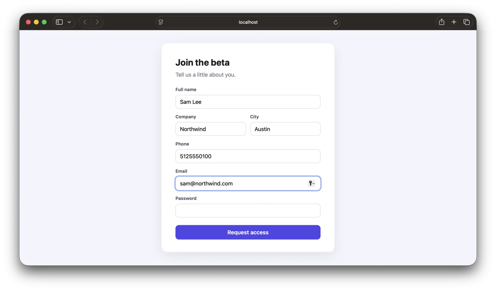
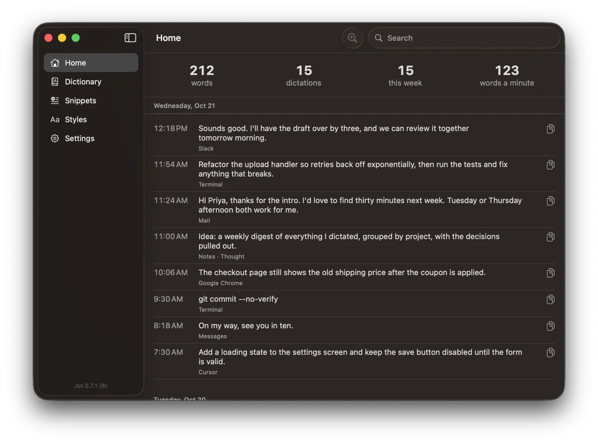
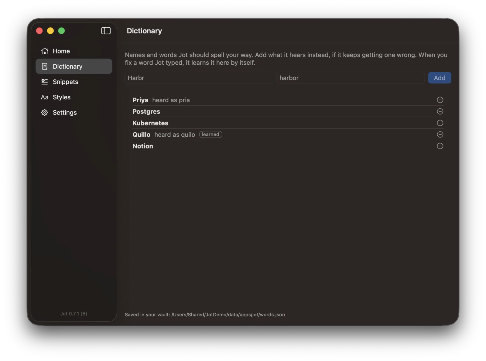
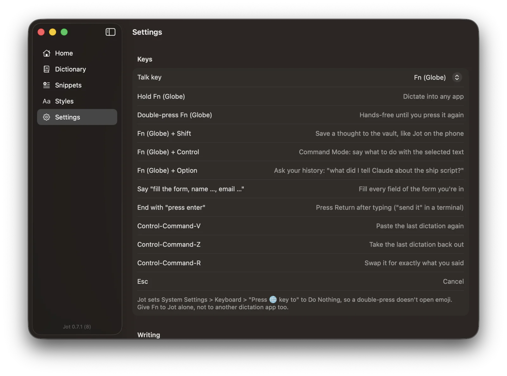

Hold Fn. Talk. It's typed.
Free, open source dictation for the Mac. Your words land wherever your cursor is, and never leave your Mac.

Try it: hold the key.
On your Mac it's the Fn key. Hold it, talk, let go: the words land where your cursor is.
Anywhere you can type.
Forms, email, chat, the terminal, the prompt of your AI coding agent. Jot pastes into whatever has your cursor.
Fill a whole form in one breath.
"Fill the form, name Sam Lee, company Northwind, city Austin, phone 512 555 0100, email sam at northwind dot com."

Speaks terminal.
Say the symbols, get the command. End with "send it" and Jot presses Return.
One key. A few chords.
Everything Jot does starts from the key you already have.
Talk, let go, it's typed. Fillers out, "no wait" corrections fixed.
Double-press to keep talking until you press it again.
A quick note to yourself, saved as Markdown. Nothing is typed.
Select text and say "make this friendlier" or "turn it into bullets".
"When is the launch now?" Answered from what you've dictated.
Everything you've said, kept for you.
A real Mac app: your history with words per minute, your own dictionary and snippets, and every setting in one place.

Learns your words.
Fix a word Jot typed and it remembers the spelling. Names a letter off match your Dictionary.
Styles per app.
Formal in Mail, casual in Slack and Messages, exact in the terminal.
Your exact words, always.
Every dictation keeps what you said before clean-up. One shortcut swaps it back.


The small things that make it fast.
Never misses a word
The mic stays ready, so even the word you said as the key went down is there.
Cleans up as you talk
Long rambles are cleaned in the background and land about a second after you let go.
Live time and words
The pill shows your voice, the time and the word count while you talk.
Never loses a ramble
Saved every 10 seconds while you talk. If anything goes wrong, it's on your clipboard.
Clipboard when there's no field
Nowhere to type? The words wait on your clipboard. Your own clipboard comes back after each paste.
Never in a password field
Jot sees secure input and refuses to type into it.
Nothing leaves your Mac.
Jot makes no network requests of its own. Your dictations stay on your Mac as plain text you own, with what you said before clean-up, so you can always get your exact words back.
Talking in a minute.
Signed and notarized by Apple.
Allow
Settings asks for Input Monitoring, Accessibility and the microphone.
Talk
Click into any text box, hold fn, and say it.
Questions
Does Jot send my voice to the cloud?
No. Speech recognition and clean-up run on your Mac with Apple's on-device models. Jot makes no network requests of its own and never writes audio to disk. macOS may download Apple's speech model once.
What does it cost?
Nothing. Jot is free and open source under the MIT license. There's no account and no subscription.
Which Macs does it run on?
Macs with Apple silicon on macOS 26 or later. Plain dictation works on all of them. Correction clean-up, Command Mode, asking your history and filling forms need Apple Intelligence turned on.
Where are my dictations kept?
On your Mac, as plain JSON lines in Application Support, with what you said before clean-up. Thoughts are Markdown files in Documents. Or choose a notes folder in Settings, such as a Prevail vault, and they live there.
Can I use a key other than Fn?
Yes. Settings offers Right Option, Right Command or Right Control. Jot sets the Globe key to Do Nothing so a double-press doesn't open the emoji picker.